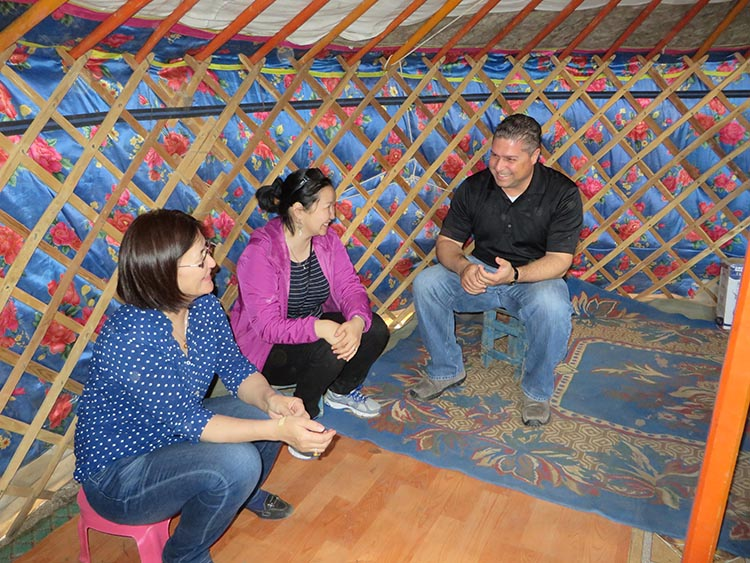

CLOSE
Message from the Compliance Advisor Ombudsman
Our 2017 report highlights the breadth of CAO’s work through its dispute resolution, compliance, and advisory functions, as well as outreach activities. We managed 51 cases in 28 countries this year, of which 12 were new complaints. Complex cases are a consistent feature, and managing this caseload effectively remains a strategic priority for CAO.
Our caseload represents just over 1 percent—a small proportion—of the overall IFC and MIGA portfolios. We believe these numbers are a healthy sign that people are accessing CAO’s services. However, many communities tell us that they do not have access to information about projects and grievance redress. Outreach is therefore an important part of our work, and we engaged over 200 organizations from 20 countries this year.
Through dispute resolution, communities and companies all over the world have reached significant agreements through dialogue. Of 21 cases in dispute resolution, 75 percent have reached full or partial agreement since CAO became involved. These include landmark agreements reached in Cambodia, Chad, and Mongolia this year between IFC clients and local communities, which are documented in these pages.
CAO published new compliance investigations related to IFC investments in the mining sector in Colombia, a port development in Togo, and tea plantations in India. In addition, CAO issued an enhanced monitoring report on IFC’s investments through financial intermediaries. IFC has acknowledged learning from these, and other, cases with new procedures and guidance.
CAO rolled out its Grievance Mechanism Toolkit this year, which is a practical resource to help companies implement effective project-level grievance mechanisms. Other advisory work focused on lessons learned from agribusiness investments, including advice on supply chains.
To address concerns about complainant safety, CAO has produced an Approach to Responding to Concerns of Threats and Incidents of Reprisals in CAO Operations. The process involved public consultation with around 20 non-governmental organizations (NGOs) and external experts, including the Office of the United Nations High Commissioner for Human Rights. The approach will be publicly released later this year.
We continue to diversify CAO’s expertise, adding new staff to our dispute resolution and compliance teams, bringing the in-house team to 21 staff from 16 countries. We are also developing a cadre of qualified regional mediators to decentralize our response.
IFC and MIGA have ambitious development goals, particularly in fragile and frontier markets. CAO has a crucial role in continuing to provide a space for communities to raise their voices and promote the resolution of disputes, robust implementation of standards, and learning from experience.
I recognize the trust placed in CAO by communities, and the commitment of IFC and MIGA clients and staff to address issues through a CAO process. Together, despite the challenges, we have a shared purpose to deliver better projects and stronger development outcomes for people.

- Osvaldo L. Gratacós
- President
- October 2017